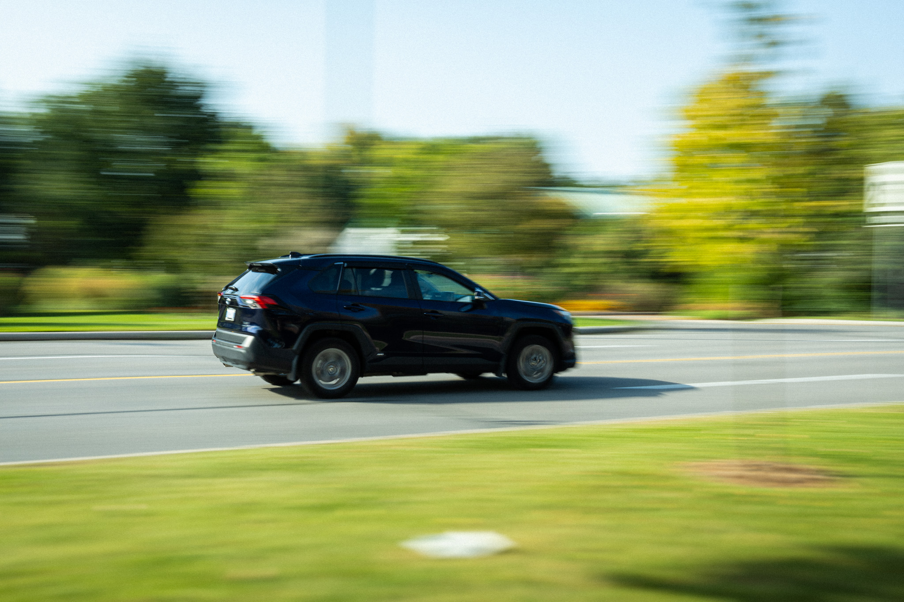

MTM6101_040 introduction to photography
Assignment for photography
Use a slow shutter speed (1/60th or 1/30th) and this time pan with the moving subject as it moves by you.
F/22 1/13sec. ISO100
The Aperture of the lens--Larger Aperture (eg. f5.6) makes shallower DoF.
F/2 1/800sec. ISO640